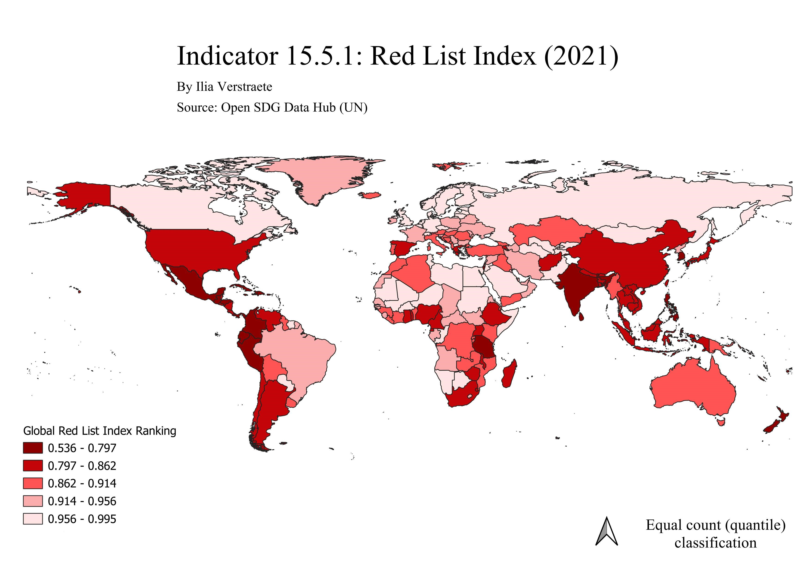

I made a website to showcase my knowledge acquired during the 'Geographic Information Systems' lab course that I followed during the summer. Here is where I will share my maps.
In this first map, you can see the global rankings of the Red List Index. This map was made using ArcGIS Online. The Red List Index (RLI) is an indicator used to track patterns in the extinction risk for species. In this map, data is used from the UN's Open SDG Data Hub (see Indicator 15.5.1 Red List Index). A RLI value of 1 signifies that all species are ranked in the category of 'Least Concern,' while a value of O depicts all the species as having gone 'Extinct'. Because all countries still have some species left, despite potentially high rates of extinction, the values are never O, unless no data was provided for that country. Nonetheless, it is important to also remain critical of the data, as these types of datasets remain prone to certain biases.
The map below shows another way of representing the data from UN SDG 15.5.1 that was used above. Starker contrast is used between the ranking values (as shown in the legend). For this map, QGIS was used as opposed to ArcGIS Online. Personally, I found ArcGIS Online easier to navigate. Nevertheless, I am very grateful to have learned to use both softwares, as this will potentially be more useful than just knowing how to use one.
Next, I made a map showing the 'topographic diversity' in Ethiopia. I chose this location due to my personal connection to it, as I lived in Addis Ababa, the capital of Ethiopia, for a few years. Topographic diversity (D) was used as a layer on my map, and it refers to the temperature and moisture related conditions within the chosen region. This map made me truly grasp the aesthetic and artistic aspects of cartography, and understand the wide variety of maps that exist.
Lastly, I learned how to make an app using ArcGIS Online. I chose to do my app on 'Perceptions of Place'. The goal was to have a final map with a lot of data from different people (primarily classmates), ranking various environmental factors such as ‘pollution,’ ‘peacefulness,’ and ‘biodiversity,’ among others. This will provide an overview of how naturally diverse the area is. To me this seemed interesting to collect data on, as I am always looking for more natural spots to go on walks or to be at peace. With this tool, people can have easy access to information about the best natural locations.
Although my app is quite small and not so advanced, I realised how useful such an app could be to professionals (such as researchers). For gathering data, the app combines maps of the area with the directly inputted data from observers, helping to easily visualise the data. This is great, because until now we have been using existing datasets to create our different maps, but now we are able to create our own data collection tool. This could potentially be a highly beneficial skill to have for my future careers.